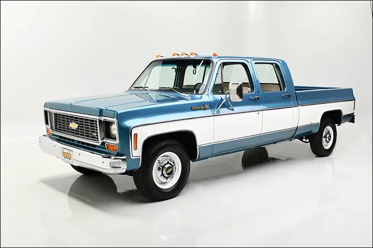
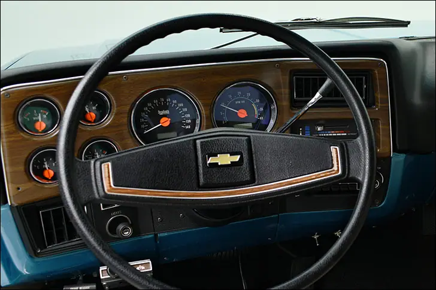
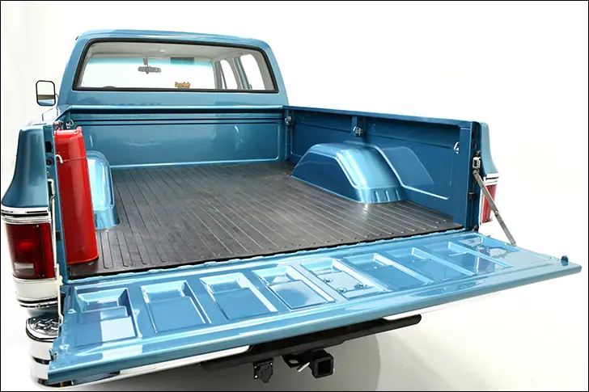
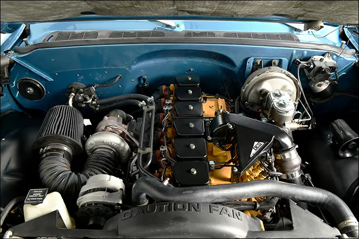
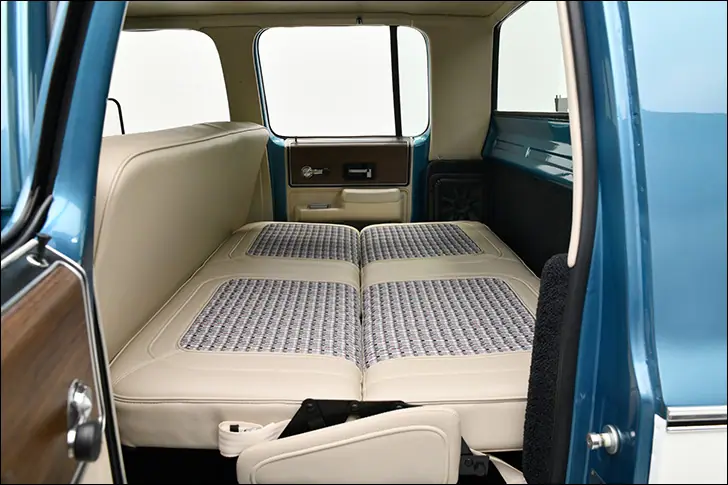
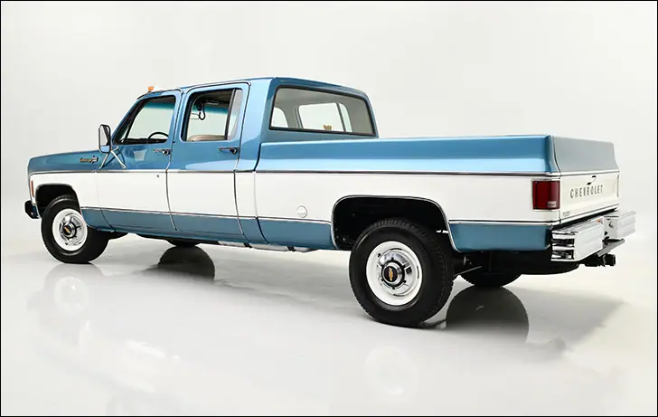

Squarebody Syndicate '73 C30


Not-New Crew
The time capsule truck that never was
Ever parked an older pickup next to a new one? The first thing you’ll notice is that the newer rig is absolutely huge in comparison. It’s almost like you took a 1:18 scale late model and put it with a 1:24 vintage hauler. Second, the frontal area of the modern truck rivals that of a ranch style home. If aerodynamics and fuel economy are the name of the game, I don’t see what the OEMs are even doing lately.
Joe Yezzi, the driving force behind Squarebody Syndicate (SBS for short) based in the Phoenix area, has noticed this alarming trend, and is clinging fast to his vintage trucks. With the main focus being 1973-79 GM pickups, SBS has a couple of laid out short beds under their belt, so in the name of variety, this ’73 C30 four door was given the treatment.

The most substantial changes are the hardest to detect yet really give the truck its look. First, Metalox Fab was directed to add 3.75” to the back of the cab for a bit more space inside; liken this to the Ram Mega Cab. The long bed was then shortend, as has become common in the C10 world, but it wasn’t a simple chop down to shortbed specs. No, Metalox took eight inches in front of and two inches behind the wheels for a slightly larger but still shorter bed that looks proportional to the now-longer cab. If you’re keeping track, eight inches were taken out of the frame. Mar-K trim, albeit modified, separates the Catalina Blue and Frost White paint from RM. Beautiful chrome bumpers came from LMC, and wherever possible, N.O.S. GM parts were used which explains the perfect OEM appearance.

Motivation comes from a 5.9L Cummins diesel backed by a Hughes Performance-prepped 47RH transmission. The engine was treated to a full rebuild before being thoroughly detailed, and can we say that it’s very refreshing to look at a vehicle this nice and this original? Sure the super-smooth full custom stuff is incredible, but whatever happened to just a few choice changes to a mostly-stock system?
The foundation of the crew cab is just as nice as the top; starting with a powedercoated frame, every nut and bolt was cleaned or replaced for a dealership-fresh look. Again, what hasn’t changed is just as interesting as what did. A 14-bolt rearend was treated to disc brakes, and OEM front and rear sway bars still keep the bow level. Chevrolet 16.5” wheels were cleaned up and wrapped with Michelin rubber, and Jason at Big 10 Garage hung the 4” Magnaflow exhaust for easy breathing. A functional, nice looking and reliable platform for the ultimate tow rig.

Joe wanted to keep that theme going inside the stretched cab, so a simple front bench seat wears a new cover from Empire Upholstery. The coach-built rear bench folds flat and was wrapped in a matching cover. Empire is also the source of the carpet, headliner and pillar caps, and the look is clean, fresh and easy. The Squarebody Syndicate Series instrument system in the woodgrain dash is based on our wildly popular VHX-73C-PU system with a few neat changes. Orange needle hubs, OEM-inspired graphics, and of course the SBS logo printed on the face. The ididit steering column is another SBS innovation; designed to be a direct-fit into the 73-87 trucks but two-inches shorter than stock allows a more comfortable driving position and easier exit from the cab. People were smaller back then ya know! The climate control system was updated with goodies from Old Air Products, and the tunes are cranked to oblivion with the help of a full Kicker sound system.

So many custom trucks we see these days are touted by their builder as “stock with a modern twist” and are filled with one-off parts, outrageous drivetrains and mega-buck underpinnings, but this homie hauler actually fits the description. The team at SBS incorporated a pinch of their favorite advancements and applied them sparingly to the project, being very careful to not lose the aura of the truck that drew them to it in the first place. I understand if a tall, four door pickup with a diesel engine isn’t your bread and butter, but I implore you to look at it as a whole package. Let it serve as a reminder of what hot rodding should be about: take a vehicle you like and make it do its job well. If I may be so bold as to take it further, make the vehicle useful everyday. I guarantee that the drive to work or the store will be more fulfilling and exciting, if only because you won’t blend in with the sea of puffed up late models.
Also on dakotadigital.com.